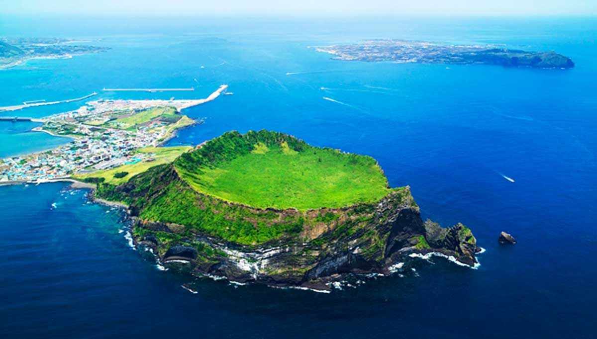
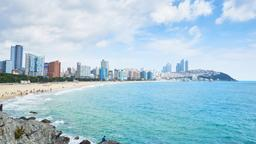
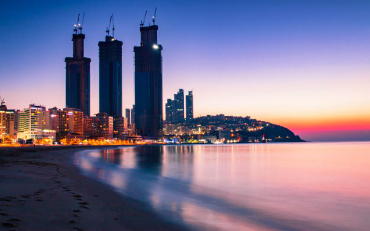

Durante años la isla surcoreana de Jeju ha sido una gran desconocida, pero su nombramiento como “Maravilla del Mundo Natural” la ha situado en el mapa y en las listas de muchos viajeros.
Es el islote más grande de la Península Coreana. Destaca entre todas las playas por la particularidad de su arena, contiene tres colores distintos blanco, rojo, negro y gris, son
algunos de los colores que maquillan la playa. Además, también se caracteriza por sus fuertes vientos, el cual permite practicar deportes acuáticos extremos. Por otra parte, en el
centro de la isla se encuentra la montaña Hallasan, la cual es un volcán inactivo, también en sus alrededores se encuentra la cascada Cheonjeyeon y el jardín botánico Yeomiji el
cual alberga un ecosistema que convierte a la isla en uno de esos lugares que no puedes dejar de visitar en tu visita a Corea del Sur. Jeju se dio a conocer en noviembre de
2011 como una de las Siete Maravillas Naturales del Mundo, aunque antes ya era considerada por la UNESCO Patrimonio de la Humanidad, Reserva de la Biosfera y Geoparque Global.
| Esta famosa playa se encuentra en Jung-dong, Haeundae-gu, Busan. Se trata de una de las playas más importantes del país. Se dice que el maerstro Choi Chi-Won, perteneciente a la Dinastía Silla, solía pasear por la isla Dongbaekseom y dejó allí una inscripción con las silabas “Hae Un Dae”, es por esto que se nombró así a la playa. Es una de las playas más famosas de toda la península de Corea, se encuentra ubicada en la región de Busan, es una de las más visitadas de todas las playas. |
 | |
| Es reconocida por los innumerables eventos culturales que son realizados en ella, como el Festival de Cine Internacional de Busan. Agregando que, a sus alrededores se encuentran numerosos restaurantes y bares para tomar algún bocadillo o comer, si así lo prefieren. |
Así como también se encuentran muy cerca lujosos hoteles y resort por si desean pasar la noche por allí. |
 |
| La playa cuenta con vistas hermosas en todas direcciones; al este puedes apreciar la Colina Dalmaji, al oeste se ven las torres futuristas de Bután, y si ves hacia el mar y está despejado tal vez veas el contorno de la isla japonesa de Tsushima ¡increíble! Se dice que el maerstro Choi Chi-Won, perteneciente a la Dinastía Silla, solía pasear por la isla Dongbaekseom y dejó allí una inscripción con las silabas “Hae Un Dae”, es por esto que se nombró así a la playa. |
||